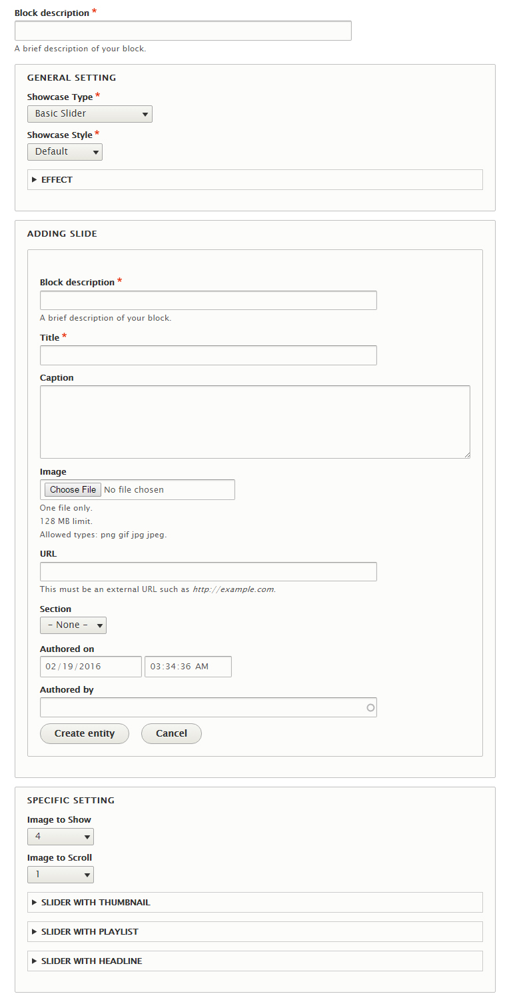
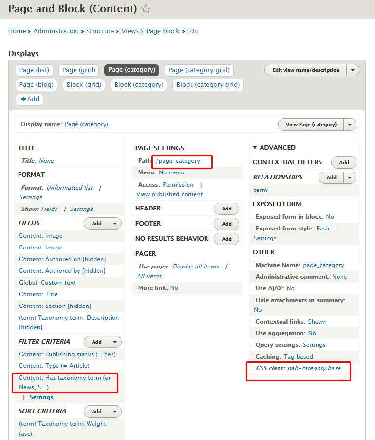

3. Omni 8.x Feature Setup
Introduction
Thank you for purchasing ESORS's Drupal theme - Omni Magazine. Omni Feature Setup guide will cover some key features of Omni theme.
If you are a Drupal beginner, we wrote a short tutorial to help you find your way around Drupal. If you already know Drupal, please complete Basic Setup first before start with this Feature Setup.
For support, you can contact us through themeforest.net. We will respond within 24hrs.
Table of Content
- Theme Colors
-
Menu Options
- Dropdown menu
- Mega menu
- Edge menu
- Hybrid menu
- Secondary menu
- Quick link
- Closure
-
Showcases
-
Custom Block
-
Views
- Article Block View
- Blog Block View
- Page Block View
- Page by list
- Page by grid
- Page by category
- Page by category grid
- Page by grid (block)
- Page by category (block)
- Page by category grid (block)
-
Search Blocks
-
Forum
- Theme Colors
-
Menu Options
- Dropdown menu
- Mega menu
- Edge menu
- Hybrid menu
- Secondary menu
- Quick link
- Closure
- Showcases
- Custom Block
-
Views
- Article Block View
- Blog Block View
- Page Block View
- Page by list
- Page by grid
- Page by category
- Page by category grid
- Page by grid (block)
- Page by category (block)
- Page by category grid (block)
- Search Blocks
- Forum
Theme Colors
Omni using Drupal Color module to setup color scheme. You can either choose a built-in color scheme or set a custom scheme of your own. Color module is a bit outdated but as long as you follow its' guide lines, it works just as well.
- How Color module works
First we need to look at Omni color files structure at Omni theme file folder omni_magazine/color. It has 6 files:
- color.inc
- preview.css
- preview.html
- preview.js
All 4 files required by Color module. Even though some files doesn't have any content, without it Color module won't works.
The most important file is color.inc. It contain all the color information. Open color.inc file with text editor, you can see following:
- 'fields' => array('title' => t('Title'), 'text' => t('Text') ...): The 'title' is field name and 'Title' is the label.
- 'colors' => array('title' => '#333333', 'text' => '#686868' ...): The 'title' is field name and '#333333' is the color code value. This is where it's getting confusing
Color module require default scheme field's color value to be unique!
It means you can't have two fields with same color code in default scheme! Why? Because Color module using this unique color code to match and replace value in omni-color-dynamic.css file, so that color code is more like identifier to the field.
- Omni Color CSS Files
There are two color files used by Omni theme and basically these two files contain all color related CSS code:
- omni-color-dynamic.css: should not be modified, it is required and dynamically changed by Color module.
- omni-color-static.css: it contain static color which is not required to be changed very often. This file can be edited but we suggest override it at omni-custom.css file.
- Built-in Colors
There are plenty color schemes for you to choose from. Simply click on Color set at theme setting then switch between built-in colors.
- Custom Color
At the end of Color set selection list, you can choose Custom. Modify field value with new color code will change your theme color completely.
Showcase
Omni offer various style of Showcase with easy setup steps. By using two new Block types: Showcase and Showcase Element, user can quickly create Showcase just like to create any other blocks.
There are three Showcase block regions with different width: showcase main(large, 1380px), showcase spotlight(medium, 1030px), showcase content(small, 780px). Seven Showcase type and two Showcase style. Each Showcase type has alternative setting to create different looks. Publish the right style Showcase into the right Showcase block regions is important. Some Showcase style doesn't match with region width.
- Understand Showcase and Showcase Element block type
- Showcase: contain basic Showcase setting. It also contain multiple Showcase Element.
- Showcase Element: contain actual image, slide title, link, caption etc.
Each Showcase Element act like slide and Showcase act like container that glue slides together.
- Showcase block form

- Title
- General Setting
- Showcase Type: seven type of Showcase
- Showcase Style: either default or alternative.
- Effect: auto play, fading and speed
- Adding Slide: adding at least slides
- Block description
- Title
- Caption (optional)
- Image: all images should be same width and height
- URL: full url with http:// which point to destination node
- Section (optional)
- Authored on (optional)
- Authored by (optional)
- Specific Setting: only needed for Showcase type as Slider with Thumbnail, Slider with Playlist, Slider with Headline, other Showcase type can skip this part.
- Image to Show: number of images need to be showing
- Image to Scroll
- Slider with Thumbnail: adding thumbnail slide. Check below for detail.
- Slider with Playlist: adding playlist slide. Check below for detail.
- Slider with Headline: adding headline. Check below for detail.
1. Basic Slider
- Requirement:
- Complete General setting
- Same height and width images
- Optional:
- Caption
- Section
- Skip:
- Specific setting
- Suitable regions: showcase spotlight, showcase content
2. Slider with thumbnail
This is actually two sliders merge together, top Basic Slider and bottom Thumbnail slider. So you need to create a smaller image for bottom thumbnail that match top slide. The bottom slide need to be added at Specific setting > Slider with Thumbnail section, similar process as adding slide at General setting with fewer options.
- Requirement:
- Complete General setting
- Complete Specific setting > Slider with Thumbnail section
- Same height and width images
- Optional:
- Caption
- Section
- Skip:
- None
- Suitable regions: showcase spotlight, showcase content
3. Slider with playlist
Similar to Slider with Thumbnail. This is actually two sliders merge together, left Basic slider and right Playlist slider. So you need to create a smaller image for right Playlist that match left slide. The right slide need to be added at Specific setting > Slider with Playlist section, similar process as adding slide at General setting with fewer options.
- Requirement:
- Complete General setting
- Complete Specific setting > Slider with Playlist section
- Same height and width images
- Optional:
- Caption
- Section
- Skip:
- None
- Suitable regions: showcase spotlight, showcase content
4. Slider with headline
This is actually a left slider with a few static posts. Static posts need to be added at Specific setting > Slider with Headline section, similar process as adding slide at General setting with fewer options.
- Requirement:
- Complete General setting
- Complete Specific setting > Slider with Headline section
- Same height and width images
- Optional:
- Caption
- Section
- Skip:
- None
- Suitable regions: showcase spotlight, showcase content
5. Highlight
Highlight Showcase is not a slider. It is static posts show with various layout styles. Layout styles base on number of slides added to General setting.
- Requirement:
- Complete General setting
- Base on layout to set height and image width
- Optional:
- Caption
- Section
- Skip:
- Specific setting
- Suitable regions: showcase main
6. Gallery
Gallery is a Carousel Slider.
- Requirement:
- Complete General setting
- Set title display at Specific setting > Gallery section
- Same height and width images
- Optional:
- Caption
- Section
- Skip:
- None
- Suitable regions: showcase content, content top and bottom
7. Newsflash
Newsflash is a text list Slider.
- Requirement:
- Complete General setting
- Optional:
- None
- Skip:
- Image
- Caption
- Section
- Suitable regions: newsflash region
Custom Block
There are two ways to create a block.
- Basic Block
- Custom Block
Basic Block has very limited options for user and that is why we created Custom Block type which allow user to do more.
- Title
- Block description
- Title Align: change title align position.
- Title Color: change title color. Input color code without #.
- Inside Frame: change title position, default checked.
- Title Border: adding bottom border for title, default unchecked.
- Image
- Adding image option
- Position image as default, left or right
- Body
- Add body content
- Custom Body Text Color: change body text color. Input color code without #.
- Custom Body Background Color: change body background color. Input color code without #.
- Link
It adds a link or a button to the block
- URL: require full url with http://
- Link Text
- Link Icon: add a Font Awesome icon to the button. For example , input code as <span class="fa fa-anchor"></span>. Check full list of icon at Font Awesome
- Link Icon Position
- Merging
The idea is to merge several blocks into one block by tab, slider, accordion, tab alternative style. Use it only when you want to merge blocks otherwise this section can be ignored.
- Type: select a merging style
- Add one or more existing blocks to merge
Views
There are three built-in views that come with Omni theme. These three views provide many ready to use pages & blocks.
- Article Blocks view
Article Blocks view focus on Article nodes. It contain nine block displays:
- Article Block Basic style
- Article Block Image style
- Article Block Text List style
- Article Block Latest style
- Article Block Attachment
- Related Article
- Article Comment
- Popular Article Today
- Popular Article All Time
Each display (except attachment) will generate a block name as View Block: Article (...). You can find it at Structure > Blocks. Once you have some articles created with proper image, you can publish those blocks
To use Article Block Attachment. We set attachment to display a single node with picture. If it attach to Article Block Text List style then Article Block Text List style will change. See below screenshot:
To modify it, click on Article Blocks view attachment display. Find attachment settings > attach to > click on Not defined link and select other display to attach. Notes: not all display suitable for attachment.
- Blog Blocks view
Blog Blocks view focus on Blog nodes. It also contain nine block displays:
- Blog Block Basic style
- Blog Block Image style
- Blog Block Text List style
- Blog Block Latest style
- Blog Block Attachment
- Related Blog
- Blog Comment
- Popular Blog Today
- Popular Blog All Time
Again each display (except attachment) will generate a block name as View Block: Blog (...). You can find it at Structure > Blocks. That is eight Blog blocks styles. You can also change Article Block view's each display FILTER CRITERIA from Article to Blog. This way you immediately double your Blog block styles and that is sixteen style plus attachment can create another style set, now your have plenty styles to choose from.
- Page and Block view
Modify before use
We are always trying to make setup as simple as possible. However at Drupal 8.0.3 this version of release, Drupal can't handle import and export Views with existing content attach to it. So user have to modify this view manually before use. Fortunately this modification is quite simple, we only need to add a filter for four display.
- First click Page(category) display tab.
- Click Add button at Filter Criteria section.
- Search for term then tick Has taonomy term check box and click Apply.
- Select Section > Dropdown > Apply.
- Select Is one of > New, Sport, Tech, Travel (those are the terms you created at 2. Omni 8.x Basic Setup process) > Apply.
- Click Save for the view.
- Repeat exact same step for Page(category grid) and Block(category grid) display.
- For Block (category) display, the step is a bit different.
- Click Block (category) display tab.
- Click Add button at Filter Criteria section.
- Search for term then tick Has taonomy term check box and click Apply.
- Select Tags > Dropdown > Apply.
- Select Is one of > latest (this term created while you are creating an Article node and tag it as latest) > Apply. You can only select one tags term! In order for tag terms to show in the seletion box you must create those term first. You can create tag term while creating any Article node at Tags field.
- Click Save for the view
1. Page by list
It display Article nodes in list style, path as www.MYSITE.com/page-list.
2. Page by grid
It display Article nodes in grid style, path as www.MYSITE.com/page-grid.
The default CSS as pab-grid three-column. Base on your site layout, it can be changed up to five columns by using CSS class pab-grid four-column or pab-grid five-column
3. Page by category
It display Article nodes in category style, path as www.MYSITE.com/page-category.
Base on the number of nodes under each category, page by category display it in different style.
Page by category display better when there is only one sidebar. If there are two sidebars, page by category will not display the last column.

Make sure Filter Criteria > Content: Has taxonomy term with correct term value. See Modify before use section for detail.
4. Page by category grid
It display Article nodes in category grid style, path as www.MYSITE.com/page-category-grid.

The default CSS as pab-category grid, it is two columns layout. Base on your site layout, it can be changed up to four columns by using CSS class pab-category grid three-column or pab-category grid four-column
Page by category grid also has alternative style as below. To change it, using CSS as pab-category grid alter
Make sure Filter Criteria > Content: Has taxonomy term with correct term value. See Modify before use section for detail.
5. Page by grid (block)
This is block version of Page by grid. It slightly different from the page version. It can be used by Mega menu
6. Page by category (block)
This is block version of Page by category. It design to work with only one Tags term. For example, if you need a block to display Article nodes that tag as Latest then you need to set FILTER CRITERIA tags as latest.
7. Page by category grid (block)
This is block version of Page by category grid. It works similar as pager version. It can also set up to four columns use same CSS class. It also has alternative style.
Search
- Search Block
Go to Structure > Blocks, you can find a Search block & a Search region.
Publish Search block into Search region, depend on Header Style setting you selected at theme setting, your Search block will appear at different position with different style.
You can also publish Search block into other region like sidebar tertiary. It will show as default style.
- Header Search Box
At Appearance > Settings > Omni Settings, if you use Full width header style or Box width header style then you can set Display header search box to Yes. Then publish Search block at Header Left position.
Forum
Setup
Drupal Forum setup is quite simple. To begin, you need to enable Forum module first then go to Structure > Forums to setup.
- Setting tab: change basic setting for forum
- Adding container: a container can contain either forum or another container.
- Adding forum: contain the actual forum posts
You can go to Forums page to add a new forum topic or create a forum node like any other Drupal node.
Copyright
The content of this document is copyrighted by ESORS.com. © 2008-2012 All rights reserved. No portion of the content may be directly or indirectly copied, published, reproduced, modified, performed, displayed, sold, transmitted, broadcast, rewritten for broadcast or publication or redistributed in any medium.